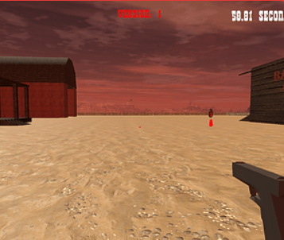
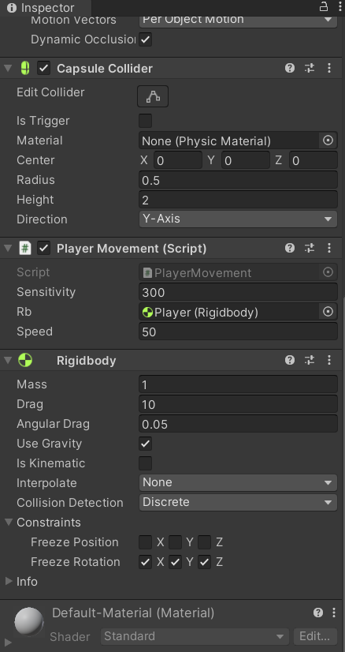
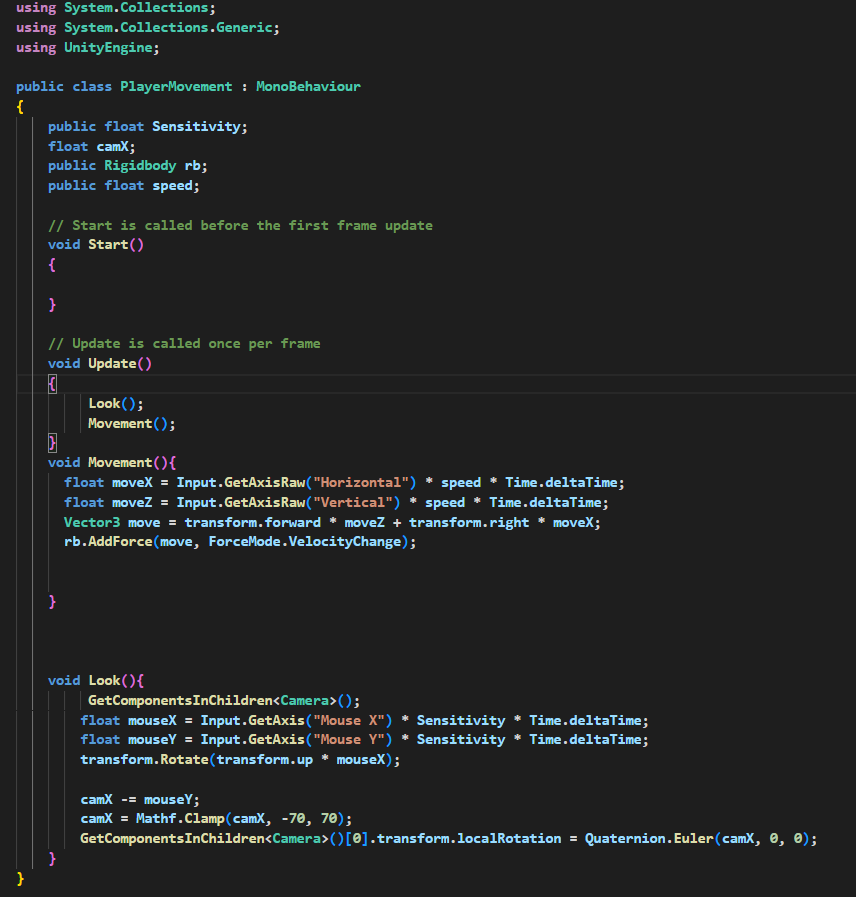
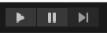

Hvordan Lage FPS Kontroller i unity
En FPS kontroller i et spill et viktig for og lage et interaktivt spill. en FPS kontroller består av kamera og WASD tastene. Disse tastene er standarene for bevegelser for skyte spill og mange andre type spill. i denne teksten skal jeg vise deg hvordan man lager dette
Sette opp Spilleren
Før du begynner og kode trenger du og sette opp spilleren. Spilleren Består vanligvis av en Capsule med cameraet som child.

Inni Capsulen skal du legge til en Rigidbody. Dette er fordi det beste og bevege seg med i unity er physics. neste ting du må legge til er Koden
Kode
når du har setter kameraet opp inni capsulen og lagt til Rigidbody må du lage en kode. for og starte med og lage denne koden er det fint og trykke Add Component i Inspectoren. når du har klikket på denne kan du skrive PlayerMovement og trykke ny script og så create and add.

Skrive Koden
I Koden kan du se Update og Start. update i unity er en linjer med koder som spilles av hver frame. i koden kan du skrive det jeg har skrivet her i dette bildet.
når du har skrivet dette kan du trykke ctrl-s og gå tilbake i unity.
Ferdig Produkt
i unity kan du nå trykke Play og spille spillet ditt. det er nå opp til deg og lage mer ting til spillet men nå har du hoved mekanismen som trengs til et fps spill. Dette er din start i unity.
